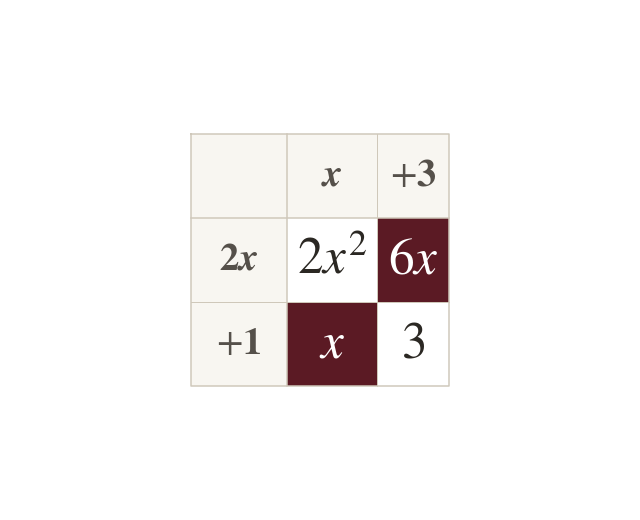
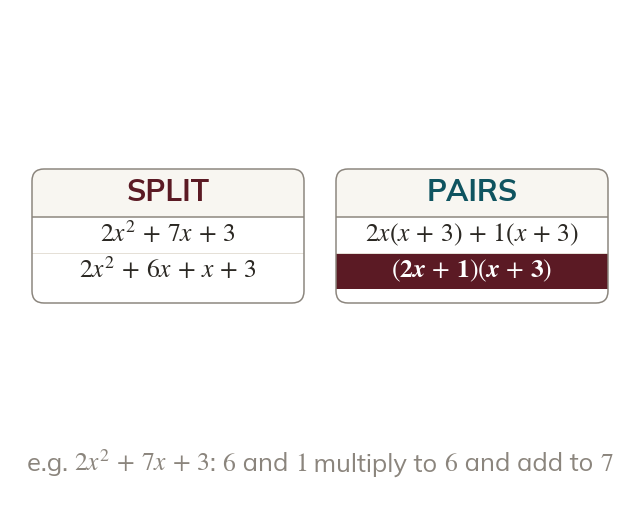
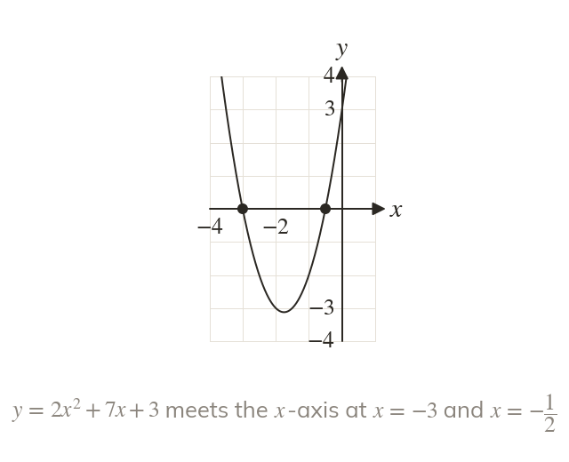
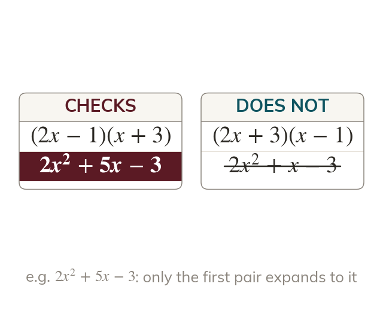

Split the middle term
The middle term is split into two terms. Their coefficients multiply to and add to b.
In + bx + two numbers that multiply to and add to b split the middle term into two. The four terms then factorise in pairs.
With a number in front of the the bracket numbers no longer simply add to b. One extra step, splitting the middle term, makes the method work again.
Work down the page at your own pace. Write every answer in your book first, then click to check it.
Read each card, then follow the worked examples one step at a time.

The middle term is split into two terms. Their coefficients multiply to and add to b.

After the split, each pair has a common factor. The same bracket is left in both, so it is a factor.
Pick an answer. If it's wrong, the feedback tells you which mistake it was.
Read each card, then follow the worked examples one step at a time.

Each bracket is set to zero as before. A bracket like gives a fraction:

Expanding the brackets checks the factorisation. A wrong factorisation gives wrong solutions.
Pick an answer. If it's wrong, the feedback tells you which mistake it was.
Finished? Next lesson: 10H.9.4 Special Quadratics and Harder Rearranging.
For each skill, tap the one that is true for you today. Your Revise pages start with anything you mark Not yet.
Your ratings are saved on this device only.
Log in, then search for a code to practise that skill.
Videos, worksheets and more on each part of this lesson.